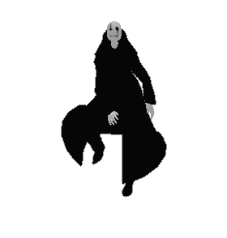
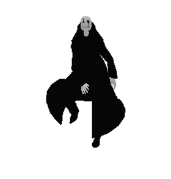
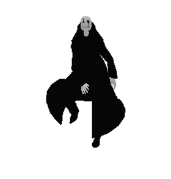

Hamza Tahboub
Northeastern University. Undergraduate.
tahboub.h [at] northeastern [dot] edu
 Hello! My name is Hamza, and I am a computer science & math major at Northeastern University’s Khoury College of Computer Sciences.
  Hello! My name is Hamza, and I am a computer science & math major at Northeastern University’s
 Hello! My name is Hamza, and I am a computer science & math major at Northeastern University’s I am a research assistant in Professor Huaizu Jiang’s Visual Intelligence lab at Northeastern University. My research centers on multimodal learning, with a specific emphasis on social interaction understanding and egocentric video to holistically interpret human behavior. I am also interested in medical applications; I spent six months at Genentech’s R&D department working on problems in computer vision and natural language processing in domains like nuclei segmentation and medical question answering.
Undergraduate Research Experience
- Addressing social degradation in pre-trained vision-language models with Professors Weiyan Shi, Gang Hua, and Huaizu Jiang
- February 2025 – Present
- Accepted at TMLR. [arxiv] [openreview]
- Led a project to unify different visual social interaction understanding tasks under one model, leveraging the synergies between diverse tasks to achieve positive transfer and competitive performance overall.
- Revealed popular VLMs of the same scale suffer a degradation impairing their social understanding and leading to negative transfer, which I uncovered comes from reduced social decodability of the visual representations after VLM training.
- Working on extending the work to handle complex compositional social tasks.
- OneGaze with Joseph Gu and Huaizu Jiang
- June 2025 – Present
- Co-leading a project to develop an architecture that unifies two distinct gaze estimation tasks: image scanpath prediction and video saliency prediction.
- These tasks are closely related as they both ultimately model how attention shifts while observing visual media.
- Egocentric Werewolf strategy classification and utterance prediction with Harrison Kim and Professors Weiyan Shi and Huaizu Jiang
- January 2024 – January 2025
- Led a project to understand subtle social cues from an egocentric perspective.
- Significantly improved performance in strategy prediction over prior methods.
- Worked on producing a strategic game-playing agent, which eventually motivated a pivot to more general social interaction understanding (project #1 above).
- Modeling nuclei segmentation with Evan Liu and Harrison Kim @ Genentech gRED
- October 2023 – December 2023
- Contributed to novel approaches and implemented state-of-the-art methods for nuclei semantic segmentation as part of the Genentech Computer Vision R&D team.
- Medical QA fine-tuning with Dr. Michael Wu, Chloe Kim, and Ayush Zenith @ Genentech gRED
- July 2023 – December 2023
- Trained ensembles of language models and NER/RE models on large-scale in-house medical datasets.
- Designed and conducted extensive experiments to evaluate the performance of different models and techniques.
- Long-form audio-visual understanding with Huaizu Jiang
- September 2023 – December 2023
- Conducted extensive literature review to scope future research directions.
- Re-implemented from scratch papers like "Towards Long Form Audio-visual Video Understanding" in PyTorch.
- Visual common sense understanding with Alberto Mario Ceballos Arroyo and Professors Byron Wallace and Huaizu Jiang
- August 2022 – August 2023
- Focused first on visual question answering commonsense datasets and explored various approaches to solving the tasks.
- Pivoted to early concepts in reasoning like chain-of-thought (CoT) prompting, discovering that CoT prompting harmed the performance of smaller language models, contrary to popular belief at the time. We documented our findings in a preprint.